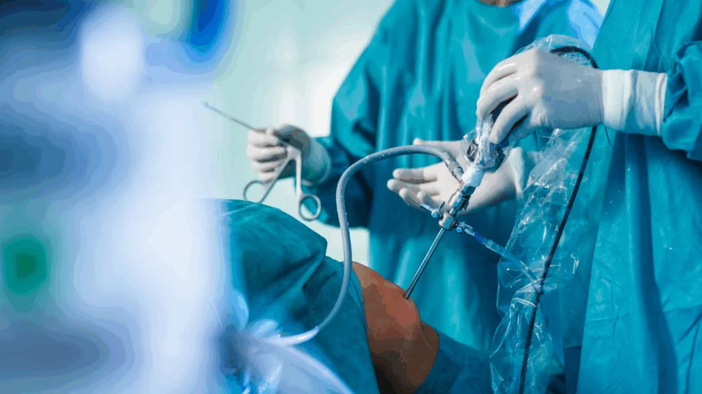

Minimally invasive orthopedic procedures in Hyderabad
Small cuts and quicker healing is the simple idea behind today's minimally invasive orthopedic surgery. Instead of opening up an entire joint or bone, surgeons slip pencil-thin cameras and instruments through very small openings.
Because less muscle and skin are disturbed, you move sooner, hurt less, and get back to life faster. Over the past decade Hyderabad has become a busy hub for these techniques.
What makes minimally invasive orthopedic surgery different?
It relies on tiny incisions and live video instead of a full open cut. A miniature camera shows the inside of your joint on a screen while slim, specially shaped tools trim torn cartilage, mend ligaments, shave bone spurs, or insert screws.
By working in a tight channel the surgeon avoids cutting major muscles or peeling back large flaps of tissue, so bleeding, swelling, and scarring stay low.
Which knee problems can you fix with keyhole knee surgery?
Most soft-tissue injuries inside the knee respond well to keyhole repair. Meniscus tears, anterior cruciate ligament (ACL) ruptures, early cartilage damage, and loose fragments floating in the joint can all be tackled arthroscopically.
The surgeon makes two or three five-millimetre portals, one for the camera, others for instruments. It flushes the joint with sterile fluid, and performs the repair. Because bone and muscle remain largely intact, many patients bear weight within 24 hours and start gentle physiotherapy the same week.
It combines pinpoint accuracy with a shorter recovery window. The shoulder and hip are deep, mobile joints surrounded by thick layers of muscle; cutting through them the traditional way lengthens rehab by months.
Arthroscopy slips past these layers, allowing the surgeon to stitch a torn rotator cuff or repair a hip labrum without detaching large muscle sheets. You keep more original strength, which translates into better long-term stability.
How do these small incisions help you heal faster?
Less tissue injury means a smaller inflammatory response. Swelling is the body's alarm system; reduce the trauma and you turn down the alarm. Lower swelling eases pain, improves early range of motion, and lets your physiotherapist push progress sooner. In many cases, the first phase of rehab like simple range-of-motion drills starts on the day of surgery.
Same-day discharge and early mobility
Often you leave the hospital on the same day or after one night. Because blood loss is minimal and pain is controlled with oral medication, extended monitoring isn't necessary for most procedures.
You check in the morning, undergo surgery, walk with guidance a few hours later, and return home by evening once you prove you can eat, drink, and climb a few steps.
What should you expect during recovery and rehab?
The first two weeks focus on swelling control and gentle movement. Ice packs, compressive bandages, and guided range-of-motion drills prevent stiffness.
Weeks 3–6 shift toward muscle activation; exercises target quadriceps after knee surgery or rotator cuff muscles after shoulder work. By 8–12 weeks most daily tasks feel normal, though competitive sports may need three to six months depending on the injury repaired.
Is minimally invasive surgery safe, and what are the risks?
Complication rates are lower than open surgery but never zero. Infection happens in roughly one case per thousand, deep-vein clots in two to three per thousand, and nerve irritation in a similar range.
The biggest risk is persistence of symptoms if underlying arthritis is severe. The camera can trim frayed cartilage, not reverse advanced issues. A detailed MRI review beforehand helps set realistic expectations.
How much does minimally invasive orthopedic surgery cost in Hyderabad?
Expect a broad range, mainly driven by implant choice and hospital category. Simple diagnostic arthroscopy may start around ₹45,000–₹60,000, while ligament reconstructions using imported graft-fixation devices can climb to ₹1.5 lakh or more.
Insurance usually covers medically justified procedures; cash packages often include operating room, implants, anaesthesia, and one follow-up visit. Always ask for an itemised estimate so you understand what happens if extra implants or an overnight stay become necessary.
Who is a good candidate for keyhole techniques?
You qualify if your injury is confined to a specific structure and you have reasonable bone quality. Athletes with isolated meniscus or labral tears almost always benefit. Middle-aged office workers with early arthritis can gain pain relief from cartilage smoothing. Even seniors with small rotator cuff tears may avoid full open surgery.
Conditions that span the entire joint like severe osteoarthritis, widespread infection, complex fractures still need more extensive exposure.
How do you choose the right surgeon in Hyderabad for these procedures?
To select the right surgeon in Hyderabad for your procedure, prioritize board certification, experience with the specific procedure, and patient reviews. Consider referrals, conduct thorough research, and ensure you feel comfortable and confident with the surgeon.
Steps to Finding the Right Surgeon:
- Seek Referrals and Recommendations Start by getting recommendations from your primary care physician, friends, or family who have had similar procedures.
- Verify Credentials Check if the surgeon is board-certified in their specialty. Look for surgeons who have completed accredited residency programs and have extensive experience in the specific procedure you need.
- Research Experience and Specialization Find out how many similar procedures the surgeon has performed and for how long. Ensure the surgeon's expertise aligns with your health needs.
- Read Patient Reviews Patient reviews can provide valuable insights into the surgeon's skill, bedside manner, and overall patient experience.
- Assess the Facility Check if the hospital or clinic where the surgeon operates is accredited and has a good reputation for safety and quality.
- Schedule Consultations Meet with potential surgeons for an initial consultation. This is an opportunity to ask questions about the procedure, recovery, and potential risks.
Frequently Asked Questions
I have early knee arthritis, will keyhole knee surgery clinics offer a full replacement?
Debridement and cartilage-smoothing can ease pain for a few years if damage is mild. The effect is temporary; staying active and managing weight are equally important.
How long do I need to keep stitches after a shoulder scope?
Stitches come out around day 10. Waterproof dressings mean you can shower after 48 hours, but soaking in pools waits until wounds close fully.
Is spinal fusion ever done minimally invasively?
Yes, select single-level fusions use tube retractors and image guidance, reducing muscle stripping. Hospital stay drops to two to three days instead of a week.
Can diabetic patients undergo minimally invasive orthopedic surgery safely?
Controlled blood sugar lowers infection risk to near-normal levels. Surgeons routinely liaise with endocrinologists to fine-tune medications around the operation.
Conclusion
Minimally invasive orthopedic surgery has become very popular in Hyderabad. By combining tiny cameras, smart instruments, and real-time imaging, surgeons now repair knees, shoulders, hips, spines, and fractures through openings so small they often close with a single stitch.
You feel less pain, rise from bed sooner, and see only short, fine scars instead of long surgical tracks. If an injury or chronic joint problem is slowing you down, talk with an experienced orthopedic team about keyhole options.